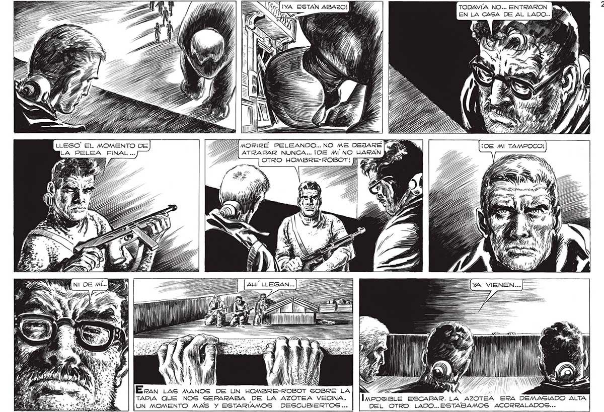

S = ¡YA ESTAN ABAJO! NÓ Y "TODAVÍA NO... ENTRARON 277 . NO MA MORIRE PELEANDO... NO ME DEJARÉ ATRAPAR NUNCA... ¡DE MINO UARAN OTRO HOMBRE-ROBOT!H E 2) le ¿+ o , AA ' | | LAA TAPA | y l 1, E Eran LAS MANOS DE UN HOMB AN TAPIA QUE NOS SEPARABA DE LA AZOTEA VECINA. ] InrosieLe ESCAPAR. LA AZOTEA ERA DEMASIADO ALTA UN MOMENTO MAS Y ESTARIAMOS DESCUBIERTOS ... DEL OTRO LADO..ESTABAMOS ACORRALADOSC...
